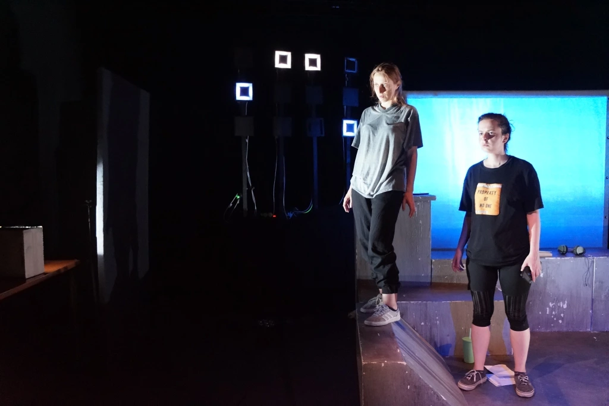

J'AI 17 ANS POUR TOUJOURS
SPECTACLE TOUT PUBLIC
TEXTE DE JACQUES DESCORDES
A PARTIR DE 14 ANS
DUREE : 1 HEURE
THEMATIQUE : ADOLESCENCE / RECHERCHE DE REPERES/ ADULTE EN DEVENIR
Stella et Adèle, deux amies de 17 ans, passent une énième nuit, perchées sur le toit de leur immeuble à compter les fenêtre en face. Stella ne parle plus à son père suite à la mort de sa mère. Adèle attend depuis plusieurs jours des nouvelles de son amoureux qui s’est enfui de chez lui. Obnubilées par leurs préoccupations personnelles, les deux filles traversent des nuits ensemble à rêver d’une vie ailleurs, d’une liberté et d’une émancipation de leur milieu social, de leurs familles, du regard pesant de la part des adultes sur leurs choix. Mais cette nuit sera différente. Cette nuit marquera le point final de leur enfance et sera déterminante pour leurs destins d’adultes. Avec « J’ai 17 ans pour toujours » nous nous sommes plongées dans le thématique de l’Eternelle Adolescence. Des questionnements intemporels de l’âge où on est mi-enfant mi-adulte, de la perte des repères totale sur le monde et sur les attentes que les parents projettent sur nous. L’âge de l’attente qu’on prenne son envol, l’âge du « vide sidéral » entre l’enfance et l’âge adulte. Sous le poids de leur quotidien rongé par des problématiques propres au Nord de la France (chômage, seuil de pauvreté élevé), nos Stella et Adèle ont perdu l’enfance mais ne savent pas comment regagner l’avenir en tant que femmes. Telles que le mythique Odyssée, elles entament leurs voyages pour retrouver les êtres chères qu’elles ont perdues et pour accomplir leurs destins. Avec ce texte d’une certaine dimension tragique, nous avons choisi d’explorer le sas des 17 ans des premières déceptions, de la famille dans laquelle on ne choisit pas de naitre, des premières grandes responsabilités. Comment choisissons nous notre chemin sans savoir où ils peut nous amener ? Comment nous construisons nous sans avoir des figures repères qui nous guident au long de notre voyage ? Est-ce que nous finissons toujours par répéter les schémas familiaux malgré nous ?
Mise en scène et jeu :
Mariana Georgieva et Sandra Wichurski
Composition musicale :
Junior Benyson, Guillaume Mahenc, Benoit Bornes et Idris Jimser
Conception scénographie :
Ariane Germain
Création lumière :
Rémi Dubot
Œil extérieur
Magali Zaphiropoulo, Anita Schulski
Vidéaste (teaser de communication)
Mathilde Foriel-Destezet
Partenaires :
Conseil Départemental 31, Théâtre Le Hangar (31), La Petite Pierre (32), MJC de Castanet Tolosan (31), Mairie de Carbonne (11), La Filature de Mazel (30), MJC Croix Daurade (31), Espace Marcel Pagnol (31) Projet sélectionné dans le cadre de « Artistes en scène, dispositif exceptionnel d’aide à la résidence de création avec actions culturelles et diffusion » mis en œuvre par le Conseil départemental.
Date de sortie
Espace Marcel Pagnol (31)
Dimanche 24 mars 2024
Prochaines résidences
Espace Palumbo / Finalisation de création
Du 10 au 18 février 2024
J’ai 17. J’ai 17 ans. Du toit terrasse de mon immeuble je regarde le monde.
Tu plisses les yeux comme ça et chaque fenêtre allumée devient une petite flamme qui s’affole au bout d’un cierge.